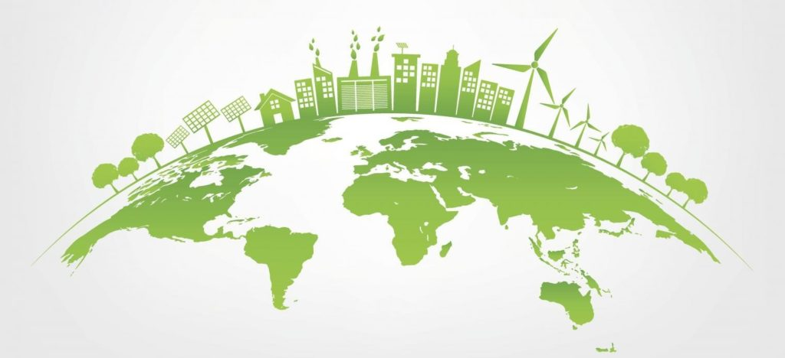

Chi è Kerakoll
- Kerakoll è un'azienda italiana all'avanguardia nel campo dell'edilizia sostenibile. Fondata nel
2020, oggi è attiva in tutto il mondo, offrendo soluzioni che rispettano sia le persone che l'ambiente.
- Ciò che rende Kerakoll unica è l'uso di materiali naturali, processi a basso impatto ambientale e una forte attenzione
alla salute e al benessere degli utenti finali.
Obiettivi di Sostenibilità
- Il nostro impegno per l'ambiente si riflette nella pubblicazione annuale dei report di sostenibilità. Puntiamo a ridurre le emissioni di CO2 del 50% entro il 2030, ottimizzando i processi e utilizzando energie pulite.
- Inoltre, ci proponiamo di utilizzare materiali riciclati per il 70% dei nostri prodotti entro il
2030 e di migliorare l'efficienza energetica nei nostri processi produttivi con l'obiettivo di ridurre il consumo energetico del 30% entro il 2025.
Perchè sceglierci
- Da anni, Kerakoll si distingue per innovazione, qualità e rispetto per l'ambiente. Le nostre soluzioni
sono progettate
per durare nel tempo e contribuire a un mondo migliore.